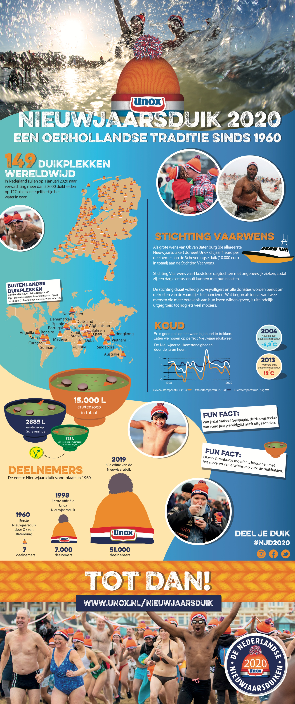
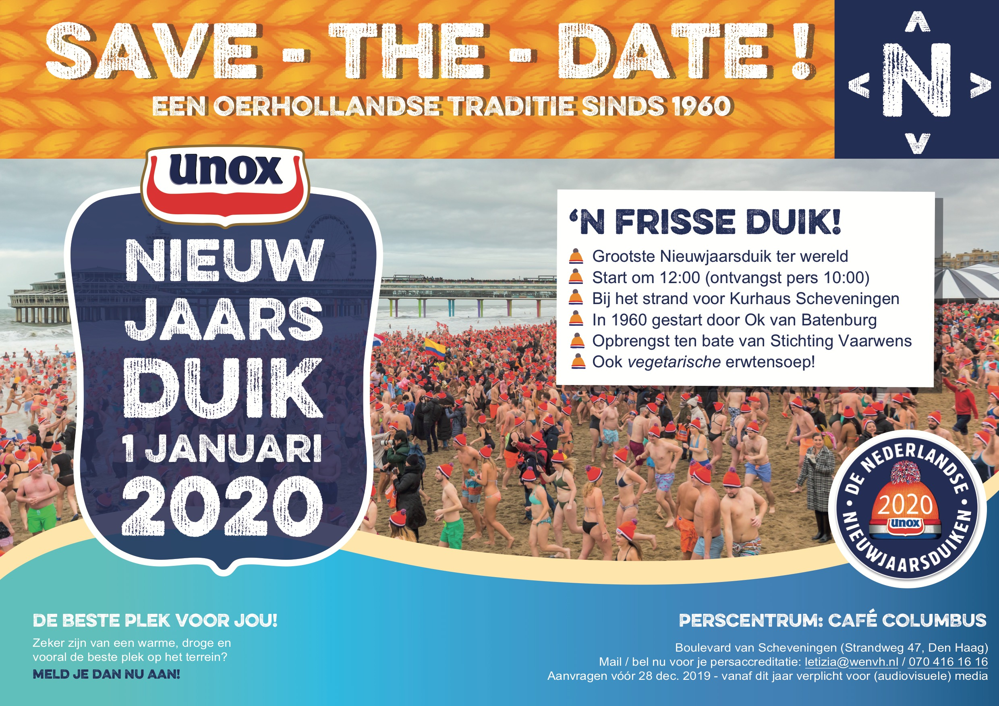
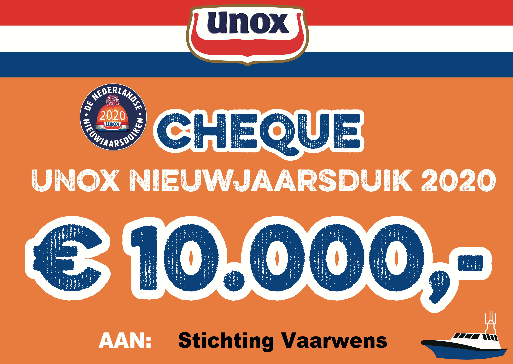

Graphic Designer
January 2020 • Internship • Scheveningen, NL
Unox Nieuwjaarsduik
During my PR and Communications internship at Winkelman & Van Hessen, I worked on campaigns for several major brands, including Unox. For the iconic Nieuwjaarsduik (New Year’s Dive) event, I was responsible for creating all the visual assets used across the campaign.
As PR and graphic design assistant, I handled the visual side of the event’s promotional materials.
- Designing graphics for event and digital use;
- Supporting the PR team with creative deliverables;
- Adapting visuals for different media formats.



×